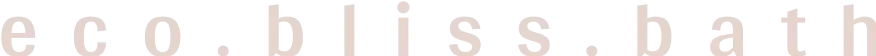

Produits de Beauté
A propos du projet
Le site web d'Eco Bliss Bath est dédié à la vente de produits de beauté écoresponsables, avec un accent particulier sur leur produit phare : le savon solide. Cette start-up met en avant une gamme de produits respectueux de l'environnement, en mettant l'accent sur des ingrédients naturels et des emballages durables. Le site offre une expérience utilisateur fluide avec une interface conviviale, permettant aux clients de naviguer facilement parmi les différents produits, d'en savoir plus sur leurs bienfaits, et de passer des commandes en ligne. Le design est épuré et moderne, reflétant l'engagement de l'entreprise envers la durabilité et la qualité.
Pour améliorer la fiabilité de ce site, j'ai automatisé les tests en utilisant Cypress. J'ai conçu et exécuté une suite complète de tests automatisés couvrant divers scénarios d'utilisation, tels que la navigation, le processus de commande, et les interactions avec les produits. J'ai également réalisé des tests spécifiques pour les vulnérabilités de sécurité, notamment les attaques XSS (Cross-Site Scripting), en vérifiant les formulaires et les fonctionnalités de connexion pour garantir leur protection contre de telles menaces. Mon objectif principal était de détecter le maximum de bugs et d'anomalies possibles. Cette approche a permis d'identifier et de corriger des problèmes potentiels avant qu'ils n'affectent les utilisateurs finaux, assurant ainsi une expérience de navigation sans faille et renforçant la stabilité et la sécurité globales du site.